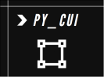

py_cui 
A python library for creating command line user interfaces.
What is py_cui?
py_cui is a python library meant to simplify writing command line user interfaces in python. It relies on the curses module, which is traditionally a unix-specific python module, however, I was able to use the windows-curses module to run py_cui on windows.
The main advantage py_cui has over traditional command line user interfaces is that it relies on widgets and a grid layout manager like most traditional Graphical User Interfaces. You may define a grid size, and then drop predefined widgets onto it into specific grid locations. Widgets can also be stretched accross multiple grid rows and columns. If you've ever made a Tkinter GUI, you will feel right at home.
Writing a PyCUI
Basic usage of py_cui starts with creating a PyCUI object, and specifiying it's grid size. Keep in mind that grid cell height and width will be measured in terminal characters, not pixels, so there is a lower limit on legal grid size, and heights will be smaller values than widths. Create this object with:
root = py_cui.PyCUI(7, 9)
The above line will create a UI with 7 rows and 9 columns. Then, add widgets with the different add commands:
label = root.add_label('Label Text', 0, 0)
button = root.add_button('Button Text', 1, 2, column_span=2, command=my_function)
...
Finally, start the CUI with
root.start()
py_cui has support for custom key bindings for both the overview mode and focused mode, popup windows and prompts, color rendering rules, and several useful widgets. For more details on writing py_cui based interfaces, be sure to check on the examples and the documentation here.
Using a PyCUI
There are some basic rules that apply to all py_cui based interfaces. There are three key operating modes - overview mode, focus mode, and popup mode.
Overview Mode
Overview mode is the main control view of the interface. In this mode you use the arrow keys to move between widgets, and you may select widgets with the Enter key. By default, you may also press buttons in this mode, unless auto_focus_buttons is set to false when the CUI was created.
Focus Mode
When in focus mode, you enter into a particular widget (For example a text box.). Each widget has some predefined basic controls, such as arrow keys to scroll in a ScrollMenu. You may also add keybindings to functions for each particular widget. These keybindings will only apply to a widget if it is in focus mode. Enter focus mode by navigating to a widget in overview mode and hitting the Enter key. Return to overview mode from focus mode by pressing Escape.
Popup Mode
Popup mode simply displays a popup over the rest of the UI. Each popup type behaves slightly differently. For example, you may exit an info popup mode by pressing Space, Enter, or Escape, while a loading popup will remain onscreen until whatever operation is being run is terminated.